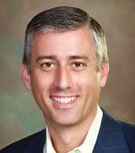
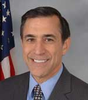
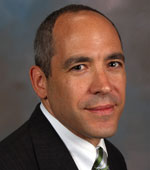

Earl E. Devaney
 Earl E. Devaney is the President of The Devaney Group, having retired from the Federal government, with over 41 years of service, at the end of 2011. He now provides strategic advice to a wide variety of companies seeking to establish, mature, and expand business with the Federal government. Mr. Devaney is recognized for wide-ranging start-up and turnaround expertise within the complexity of government. He is a decisive, independent thinker with policy and operations management expertise and the ability to assess issues and respond to organizational crises. Providing lasting solutions that streamline operations and increase return on investment are hallmarks of his career.
Earl E. Devaney is the President of The Devaney Group, having retired from the Federal government, with over 41 years of service, at the end of 2011. He now provides strategic advice to a wide variety of companies seeking to establish, mature, and expand business with the Federal government. Mr. Devaney is recognized for wide-ranging start-up and turnaround expertise within the complexity of government. He is a decisive, independent thinker with policy and operations management expertise and the ability to assess issues and respond to organizational crises. Providing lasting solutions that streamline operations and increase return on investment are hallmarks of his career.
Six days after President Obama signed the American Recovery and Reinvestment Act into law, he named Mr. Devaney Chairman of Recovery and Transparency Board, to oversee the $840B stimulus expenditure. In announcing his appointment, the President said, “I can’t think of any more tenacious and efficient guardian of the hard-earned tax dollars the American peoplehave entrusted us to wisely invest.”
Working under tight legislative deadlines and maximizing his interpersonal skills, Mr. Devaney established a new Federal Agency, created two award winning websites with innovative geospatial web services for full transparency, and implemented an internationally lauded oversight program. These achievements were accompanied by extensive liaison at the highest levels of government, frequent Congressional testimony, and an active calendar of speaking and media engagements. Reporting directly to the Vice President, he also served as the Co-Chair of the U.S. Attorney General’s Financial Fraud Enforcement Task Force. His leadership of the Recovery Board resulted in extraordinarily low levels of fraud while enabling millions of citizens to clearly see how their tax dollars were being spent in real time via the Internet.
Mr. Devaney was heralded by the national media for ushering in a new era of accountability and transparency for the Federal government. In 2010, he addressed the European Parliament, in Brussels, on “Accountability and Transparency: The American Experiment”. In 2011, he received the Donald L. Scantlebury Award, which recognizes a senior government executive who demonstrates outstanding leadership and significant economies, efficiencies and improvements in financial management in the public sector.
In 1999, Mr. Devaney was appointed Inspector General for the Department of the Interior by President Clinton and confirmed by the U.S. Senate. During his tenure, he led the public corruption investigations, resulting in the convictions of Washington lobbyist Jack Abramoff and the Department’s Deputy Secretary and presided over the oil and gas investigations that engulfed the Mineral Management Service. Due to his investigative and audit work at Interior, Mr. Devaney was invited to deliver the keynote address at the 2008 United Nations Conference on Public Corruption in Vienna. Also in 2008, Ethisphere Magazine named him one of the top 100 most influential people in business ethics.
Prior to his role at Interior, he was the Director of the Office of Criminal Enforcement, Forensics and Training for the Environmental Protection Agency. Mr. Devaney directed all of EPA’s criminal investigators, as well as the agency’s forensics laboratory and its enforcement-training institute. He built and led these programs from inception through unprecedented growth. While at EPA he was the U.S. Head of Delegation and Co-Chair of INTERPOL’s Environmental Crimes Committee in Lyon, France. In 1998, he received the Presidential Rank Award for Outstanding Government Service.
Mr. Devaney spent the first 20 years of his career with the Secret Service serving in locations throughout the United States and abroad. When he retired, he was the Service’s foremost expert on fraud and Special Agent-in-Charge of the Fraud Division. He modernized worldwide fraud programs by introducing progressive, new approaches to investigating and preventing credit card, telecommunications, and computer fraud.
Mr. Devaney holds a B.A. from Franklin & Marshall College in Lancaster, Pennsylvania and graduated from the prestigious Leadership Coaching Program at Georgetown University, the Executive Development Program at George Washington University, and two executive management programs at the Kennedy School of Government, Harvard University. In 2011, he was elected a Fellow of the National Academy of Public Administration. Currently he serves on a number of corporate and non- profit Boards.
Bill Franks
Bill Franks is Chief Analytics Officer for Teradata, providing insight on trends in the Advanced Analytics space and helping clients understand how Teradata and its analytic partners can support their efforts. In addition, Bill is a faculty member of the International Institute for Analytics and the author of the book Taming The Big Data Tidal Wave (John Wiley & Sons, Inc., April, 2012). He is also an active speaker and blogger.
Bill’s focus has always been to help translate complex analytics into terms that business users can understand and to then help an organization implement the results effectively within their processes. His work has spanned clients in a variety of industries for companies ranging in size from Fortune 100 companies to small non-profit organizations. You can learn more about Bill at http://www.bill-franks.com.
Joel Gurin
Joel Gurin is senior advisor to the Governance Lab at New York University, which studies and promotes the use of data and collaborative technology to improve the workings of government. He has a background in government, publishing, and nonprofit leadership. Gurin worked for fifteen years at Consumers Union, the nonprofit publisher of Consumer Reports, where he began as science editor, soon became editorial director, and then served as executive vice president for almost a decade. As EVP of Consumers Union, Gurin launched and grew Consumer Reports’ website, ConsumerReports.org. Under his leadership it became the world’s largest information-based paid-subscription site: It now has more than three million active paid subscribers.
In December 2009, Gurin joined the Obama Administration as chief of the Consumer and Governmental Affairs Bureau of the Federal Communications Commission. He conceptualized and served as chair of the White House Task Force on Smart Disclosure, which studied how government Open Data can help consumers choose the best options in services like health care, financial services, education, and energy. He is the author of the upcoming book Open Data Now (McGraw-Hill, January 2014), and the founder and editor of OpenDataNow.com.
Hudson Hollister
 Hudson Hollister is the founder and executive director of the Data Transparency Coalition. The Coalition is a trade association of technology companies, nonprofits, and individuals supporting the publication of government data in machine-readable formats. Prior to founding the Data Transparency Coalition, he served as counsel to the Committee on Oversight and Government Reform of the U.S. House of Representatives and as an attorney fellow in the Office of Interactive Disclosure at the U.S. Securities and Exchange Commission. Before his government service, he was a securities litigator in the Chicago office of Latham & Watkins LLP.
Hudson Hollister is the founder and executive director of the Data Transparency Coalition. The Coalition is a trade association of technology companies, nonprofits, and individuals supporting the publication of government data in machine-readable formats. Prior to founding the Data Transparency Coalition, he served as counsel to the Committee on Oversight and Government Reform of the U.S. House of Representatives and as an attorney fellow in the Office of Interactive Disclosure at the U.S. Securities and Exchange Commission. Before his government service, he was a securities litigator in the Chicago office of Latham & Watkins LLP.
Congressman Darrell Issa
Congressman Darrell Issa represents the people of California’s 49th Congressional District in the United States House of Representatives, a seat he has held since 2001. The 49th District includes Camp Pendleton, the largest Marine Corps training facility in the United States, and the northern portions of San Diego County and southern Orange County. Congressman Issa and his wife Kathy live in Vista, CA. They have one son, William, and celebrated their 30th wedding anniversary in 2010.
As a senior in high school, Issa enlisted in the United States Army. Through his Army service, he received an ROTC scholarship and graduated with a degree in business from Sienna Heights University in Adrian, Michigan. Upon graduation, Issa was commissioned as an Army officer, and ultimately obtained the rank of captain. He completed his active-duty military service in 1980 and turned his interests to the private sector.
At the height of his career in business, Issa served as CEO of California-based Directed Electronics, a company that Issa founded and built in the mid-1990s to become the nation’s largest manufacturer of vehicle anti-theft devices, including the highly-successful Viper system. In 1994, Issa was named Entrepreneur of the Year by Inc. Magazine, Ernst & Young and The San Diego Union Tribune. During his leadership of Directed Electronics, Issa served as chairman of the Consumer Electronics Association, an organization of 2000 companies within the consumer technology industry that hosts the annual Consumer Electronics Show in Las Vegas. When he stepped down as CEO to serve as a Member of the U.S. House of Representatives, Directed Electronics employed nearly 200 people.
As a Congressman and leader in California grassroots politics, Issa has championed the cause of smart, efficient government, and has pushed legislation to balance the federal budget and promote transparency across the federal bureaucracy. In 2003, Issa was the architect behind the successful popular uprising to recall former Democratic California Governor Gray Davis.
Issa currently is a member of the House Judiciary Committee and the Oversight and Government Reform Committee, where he serves as the Chairman. Previously, Issa served on the House Permanent Select Committee on Intelligence, the Foreign Affairs Committee, the Energy & Commerce Committee, and the Small Business Committee. As the holder of 37 patents himself, Issa has been vigilant about protecting the intellectual property rights of artists and other entrepreneurs to help protect America’s position at the forefront of innovation and creativity in the entertainment and technology industries. His successful efforts to fight human trafficking along the United States border has resulted in tougher laws, stiffer penalties, and more consistent enforcement. His watchful concern to guarantee that U.S. taxpayers receive the royalties they are owed from mineral interests on federal lands exposed fraud and mismanagement at the Mineral Management Service (MMS) in 2006.
In 2008, when Congress was asked to pass the Troubled Asset Relief Program (TARP) in the wake of an historic financial crisis, Issa stood by his instincts as a businessman and opposed giving a blank-check bailout to Wall Street – he voted against all bailouts during the financial crisis. Refusing to give up and concede to those who favored a bailout-centered response to this and future financial failures, Issa put forward a proposal to create a bipartisan commission to uncover the root causes of the financial crisis. This idea was passed into law in early 2009 and the investigation commenced in January 2010. Issa expects the results will reveal government mistakes and protect U.S. taxpayers from future runaway government intervention in the financial and housing markets.
Recognizing his success as a Congressional watchdog of taxpayer dollars, at the beginning of the 111th Congress House Republicans tapped Issa to serve as the top Republican on the House Oversight and Government Reform Committee, which is the main investigative committee of the United States House of Representatives charged with the protecting the interests of U.S. taxpayers and eliminating waste, fraud and abuse in the federal bureaucracy. In the first year of his leadership, the committee has undertaken numerous detailed investigations of the Countrywide Financial VIP Program that benefited government officials with special reduced-rate mortgage loans, the illegal use of taxpayer dollars by the Association of Community Organizations for Reform Now (ACORN), the decades-old misplaced government agenda to manipulate the U.S. housing market through Fannie Mae and Freddie Mac that created the housing crisis, the politicization of science at the Environmental Protection Agency (EPA), and a broad investigation into the financial crisis of 2008-2009.
As a fiscal conservative committed firmly to low taxes and free markets, Issa has opposed the rise of out-of-control government spending and fought tirelessly for the responsible, transparent use of taxpayer dollars. He’s pushed to achieve more whistleblower protections for those who report waste, fraud and abuse in the federal bureaucracy. And he’s offered substantive reform initiatives to open up government so that Americans know what’s happening in Washington and can become more democratically engaged in the day-to-day oversight of their government.
Craig M. Lewis
Craig M. Lewis is Chief Economist and Director of the Division of Economic and Risk Analysis at the U.S. Securities and Exchange Commission. He is currently on leave from Vanderbilt University where he is the Madison S. Wiggington Professor of Finance at the Owen Graduate School of Management.
He first served at the SEC as a visiting Economic Fellow from January 2010 through July 2010, and subsequently returned in the same capacity in January 2011. Lewis has conducted research on volatility in stock and futures markets, margin adequacy, corporate earnings management, corporate financial policy, executive compensation, selective disclosure, and herd behavior by equity research analysts. His research has been published in the Journal of Financial Economics, Review of Financial Studies, Journal of Econometrics, Journal of Financial and Quantitative Analysis, among other places.
He is associate editor of the Journal of Corporate Finance, Journal of Business Accounting and Finance, and the North-American Journal of Economics and Finance, and has been associate editor of the Journal of Financial Research.
Beth Simone Noveck
Beth Simone Noveck is Founder and Director of The Governance Lab (www.thegovlab.org). Funded by a grant from the John D. and Catherine T. MacArthur Foundation and the John S. and James L. Knight Foundation, the Gov Lab aims to improve people’s lives by changing how we govern using advances in technology and science.
Beth is a visiting professor at both New York University’s Robert F. Wagner Graduate School of Public Service and the MIT Media Lab, and is on leave as professor of law and founder of the Institute for Information Law and Policy at New York Law School. She served in the White House as the first United States Deputy Chief Technology Officer and founder and director of the White House Open Government Initiative (2009-2011). UK Prime Minister David Cameron appointed her senior advisor for Open Government, and she served on the Obama-Biden transition team.
Her scholarship, activism, and teaching focus on accelerating and assessing progress toward smarter, more collaborative and decentralized governance. Among projects she's designed or collaborated on are Peer To Patent, the US government’s first expert network; OrgPedia, the Wikipedia of firms; Data.gov and Challenge.gov.
A graduate of Harvard University and Yale Law School, she was named one of the “100 Most Creative People in Business” by Fast Company magazine and one of the “Top Women in Technology” by Huffington Post. She is the author of Wiki Government: How Technology Can Make Government Better, Democracy Stronger and Citizens More Powerful and co-editor of The State of Play: Law, Games and Virtual Worlds. Her next book The Networked State will appear with Harvard University Press. She tweets @bethnoveck.
Peter Warren
Peter Warren is majority Policy Director for the House Oversight and Government Reform Committee, chaired by Rep. Darrell Issa (R-CA). Warren’s primary responsibility is coordinating all the Committee’s legislative activity, which covers a variety of issue areas, including federal procurement and personnel, the Postal Service, the District of Columbia, the Census Bureau, and Government management, efficiency and transparency measures. Before coming to the Committee in September 2010, Warren spent six years with the Education Finance Council, where he served as President from 2008 to 2010. Prior to that, he was a Budget Analyst with the House Budget Committee and a Professional Staff member with the House Committee on Education and the Workforce.